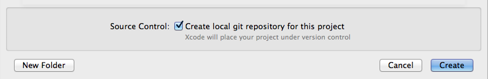

Contents:
- Creating the Project
- Command Line Arguments
- Input Redirection - stdin
- Input and Output files - fstream
- Debugging
- Source Control
- Testing on CAEN
Creating the Project
After opening Xcode, go to File->New->Project

In the OS X section, select 'Application' and then select the 'Command Line Tool' option. Then press 'Next'
Name your project and set it's 'Type' to C++
On the next screen select where you your project will be saved and remember to check 'Create local git repository for this project'
Command Line Arguments
Many projects will require your program to accept several command line arguments. Let's use an example where we have three arguments, arg1, arg2 and arg3. If you ran the excecutable from the command line, it would look like this:
./project1 arg1 arg2 arg3
Sidenote: ./project1 arg1 arg2 arg3 < infile.txt Here, infile.txt is NOT a command line argument visible to the program.
It is a redirection to stdin, and is discussed in the next section.
Anyway... To add these three arguments in Xcode, go to Project->Edit Scheme
...or click on the project name right next to the Run button.

This window will pop up. If you see something different, make sure you have selected 'Run' on the left, and 'Arguments' on top

Add whatever arguments you need in the 'Arguments Passed on Launch' box, and click Okay. In this case, we add arg1, arg2 and arg3.

Voila! You will now have these three arguments acessible to you as argv[1], 2 and 3.
Input Redirection - stdin
Let's say your project spec wants you to use a file as input, but using cin (NOT ifstream). Something like this:
./myExecutable < inputFile.txt
There is no straightforward way to do this in Xcode, but there is a somewhat simple workaround. First, run your project and make sure it outputs "Hello, World!" to the Xcode Console. Then, to add your input file, right click on your executable name in the 'Products' group in the Xcode Project Navigator and select 'Show In Finder'
Put your input text file in the same directory as your executable (this way Xcode can find it when it is running your program)
Next go to Project->Edit Scheme and add an environment variable with the value of your text file name

Finally, in your main function (before you do any input processing) add the following:
ifstream arq(getenv("MYARQ"));
cin.rdbuf(arq.rdbuf());
Now cin will behave the same as if you redirected the contents of a text file to a program, as seen above
REMEMBER TO COMMENT THIS CODE OUT OR DELETE IT BEFORE YOU SUBMIT OR TEST ON CAEN, INPUT WILL NOT WORK IF THIS CODE IS STILL THERE
Input and Output files - fstream
Using ifstream and ofstream is pretty simple in Xcode, and there are (at least) two methods to do so. Here's an example that uses an ifstream. It will copy the contents from file1.txt to file2.txt:
ifstream infile("file1.txt");
ofstream outfile("file2.txt");
string temp;
while (!infile.eof()) {
getline(infile,temp);
outfile << temp;
}
Option 1
The first option is to place the file(s) into the products directory where the excecutable is.
Right click on the products directory and click 'Show in Finder'. Put your input files in there, and find your output files there after running.
Option 2
Another option is to create the input files right within Xcode and then modify 'Copy Files' in the Build Phase. This is a more complicated one-time setup, but will then allow you to edit the input file right within Xcode.
First, create a new empty file in Xcode via File->New->File (or skip this and drag a file into Xcode).
Then, click on the project name right above your list of files. Go to the 'Build Phases' tab, and you'll see this:

Add your input file to the 'Copy Files' section. Make sure that 'Products Directory' is the Destination, subpath is empty, and 'Copy only when installing' is unchecked. You may see project1.1 as a copy file. Feel free to remove that.
You're all set. Modify the input file in Xcode, and it will copy it into the products directory when you Run. The output file will be in the products directory like in Option 1.
Debugging
Debugging is pretty awesome in Xcode, and will save you a lot of headache versus using GDB via the command line. To place a breakpoint at a line, click the area immediately to the left of that line of code.
To enable breakpoints, make sure the 'Breakpoints' button on the top Xcode toolbar is turned on. It will automatically turn on when you set your first breakpoint. In the Navigator on the left, there is also a Breakpoints tab. Here, you can see all of your breakpoints by file, and modify & delete the breakpoints. With this tab selected, the '+' in the bottom left corner of Xcode will allow you to add breakpoints as well. Turning on exception breakpoints can be useful as it occasionally will bring you to the cause of a seg fault.
When your project hits a breakpoint, you will be presented with the debug window. Here, you have a snapshot of active variables, and the usual options to 'Continue,' 'Step over,' 'Step Into' and 'Step Out.' If you don't see the debug window, you may have the console expanded too much, so click the button right above the right side of the console.
Source Control
As long as you checked the 'Create local git repository' back in step 1, if you change or add something in a file, that file should show up modified in Xcode, as seen by the 'M' to the right of the file name
Let's say we want to commit this change, we can do this two ways. The first being through the GUI of Xcode. First, right click on the modified file, and then select Source Control->Commit Selected Files.
Then a screen with the diff of the previous commit and your soon to be new commit will appear, add a commit message at the bottom and then select the 'Commit X Files' button to commit the changes
You can also do this through using the command line: Make a change to a file in your project, it will show up as Modified in Xcode, then on the command line, go to the path of your project. If you type git status you should see that the file you changed is listed as modified.
To commit the file, simply type git commit -am "My commit message" and this will automatically commit any tracked files (in this case, just our modified file)
To add files to your git repo, in Xcode, add a new file simply with File->New File. An 'A' should show up next to your new file, showing it has been added since the last commit. To commit through Xcode use the same steps from above: Right click file->Source Control->Commit Selected Files, and then write your commit message and commit.
To add a file to your git repo on the command line, simply type git add mynewfile.h and then when you type git status the newly added file should show up as added. Then simply write, as seen above, git commit -am "My commit message: Commiting my new file" and your newly added file will be commited.
Testing on CAEN
Development is awesome in Xcode, but you should be sure to consistently test your code in CAEN, since that is typically the enviroment where your code will be graded. We've used a couple different methods to share code easily between your Mac and CAEN.
Option 1
The first method is setting up a git repo on either CAEN or Github (or others like Bitbucket), and cloning the same repo on your CAEN. This isn't a git tutorial, so look other places for more help with that. Then you can just push from your mac and pull from CAEN whenever you want to test.
Option 2
The second method is to use scp. In Terminal, cd to your project folder, where you should see project1.xcodeproj and another directory called project1. This inner 'project1' directory should contain your code. To copy all of your code into CAEN and then test, do the following:
$ scp -r project1 uniqname@login.engin.umich.edu:~/classDir $ ssh uniqname@login.engin.umich.edu $ cd classDir/project1
Then just compile and test your program! If you notice any new bugs or compilation errors, there are some common causes due to the differences between Xcode and CAEN:
- Xcode automatically includes some files. Explicitly '#include' any libraries or files you need.